MySQL什么情况下会造成索引失效

一、准备工作，准备sql
这里我使用的mysql版本是 8.0.19。
CREATE TABLE `student` (
`id` int(11) NOT NULL AUTO_INCREMENT,
`name` varchar(20),
`age` int(11),
`address` varchar(25),
`crtdate` timestamp,
PRIMARY KEY (`id`) USING BTREE
);
insert into student(name,age,address,crtdate) values('张三', 15, '山东青岛', now());
insert into student(name,age,address,crtdate) values('李四', 17, '山东济南', now());
insert into student(name,age,address,crtdate) values('王五', 18, '山东潍坊', now());
-- 创建复合索引
alter table student add index idx_stu_nameAgeAddr(name,age,address);
二、索引是什么、使用explain关键字来解析sql使用索引情况
explain如何使用，请阅读这篇文章：
三、索引的使用与失效场景
使用全部复合索引（索引正常使用）
之前创建了name、age、address三个字段的复合索引，查询条件根据这三个字段，是可以直接使用索引的。
-- sql贴在这里了
explain select * from student where name='张三' and age=15 and address = '山东青岛';
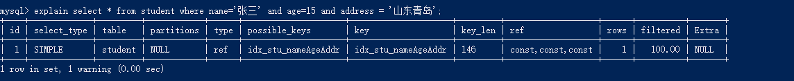
最佳左前缀法则
如果索引了多列，要遵循最左前缀法则。指的是查询从索引的最左前列开始并且不跳过索引中的列。
-- sql贴在这里了
explain select * from student where name='张三' and age=15;
explain select * from student where name='张三';
explain select * from student where age=15 and address = '山东青岛';
explain select * from student where name='张三' and address = '山东青岛';
以下这两种查询都是没问题的，因为遵守最佳左前缀法则，条件字段从左到右，从第一个索引字段name开始并且也不跳过索引中间的列：
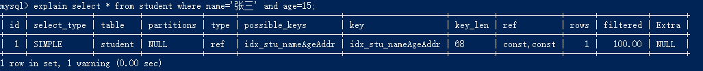
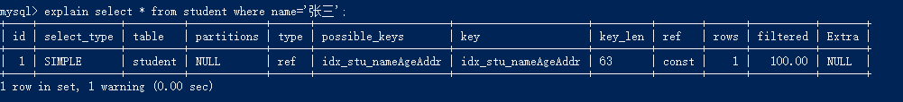
以下会造成索引完全失效，因为没有使用复合索引的第一列name：
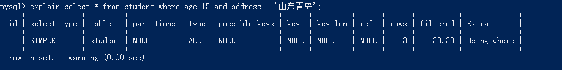
以下会造成索引部分失效，第一个条件name是走索引的，但是address因为跳过了age所以address这个字段索引失效：
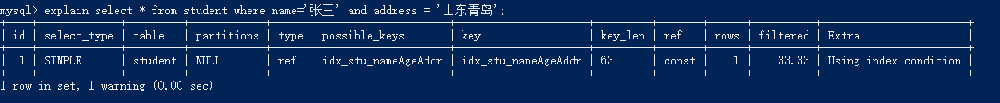
在索引列上做任何操作
（计算、函数、自动或手动类型转换），会导致索引失效而转向全表扫描。
-- sql贴这里了
explain select * from student where left(name,1)='张';
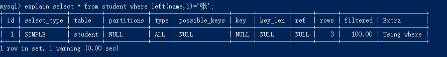
索引列上使用了表达式，如where substr(name, 1, 3)=‘张小四’、where num = num +1，表达式是一大忌讳，再简单的表达式mysql也会造成索引失效。
有时数据量不是大到严重影响速度时，一般可以先查出来，比如先查询所有订单记录的数据，再在程序中筛选。
字符串不加单引号
explain select * from student where name = '123';
explain select * from student where name = 123;
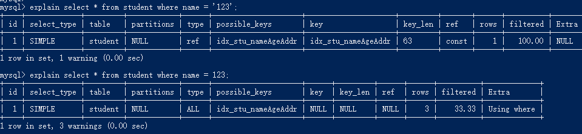
使用索引中范围条件右边的列。
（范围条件之后的索引全失效，但是范围条件之前的和范围条件的还是用到索引的。）
-- sql贴这里了
explain select * from student where name='张三';
explain select * from student where name='张三' and age=15;
explain select * from student where name='张三' and age=15 and address = '山东青岛';
explain select * from student where name='张三' and age>15 and address = '山东青岛';
很显然，最后一条sql，只有name、age走了索引，但是address失效了。
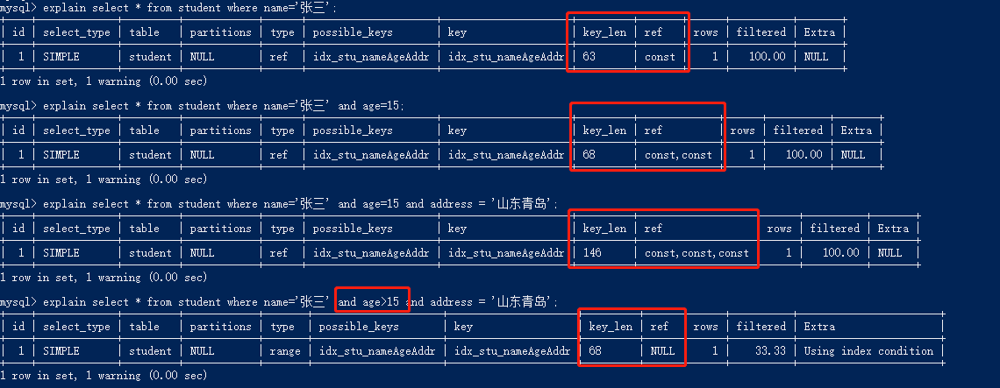
尽量使用覆合索引
（只访问索引的查询（索引列和查询列一致）），减少select *。
我们都知道，Extra中出现using index是好现象，对查询效率会增强。
而且有范围查询时，不用*的时候，key_len会更小，这意味着会增加查询效率。
explain select * from student where name='张三' and age=15 and address = '山东青岛';
explain select name,age,address from student where name='张三' and age=15 and address = '山东青岛';
explain select * from student where name='张三' and age>15 and address = '山东青岛';
explain select name,age,address from student where name='张三' and age>15 and address = '山东青岛';
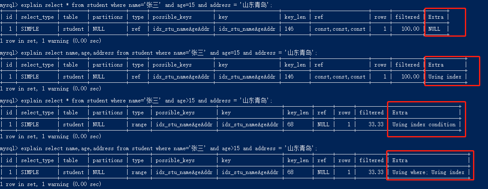
使用不等于（!= 或者 <>）
-- sql贴这里了
explain select * from student where name='张三';
explain select * from student where name!='张三';
explain select * from student where name<>'张三';
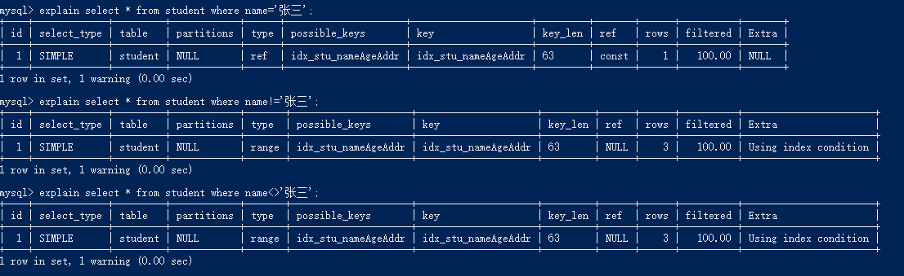
is not null也无法使用索引
-- sql贴这里了
explain select * from student where name='张三';
explain select * from student where name is null;
explain select * from student where name is not null;
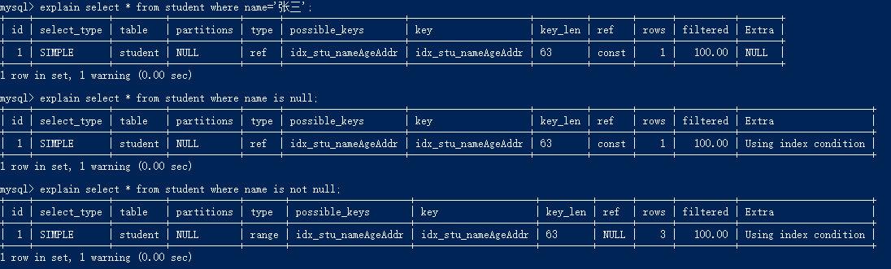
like以通配符开头（'%abc…'）会导致索引失效。
like以通配符开头会导致索引失效，但是通配符放在后面索引就会正常使用。
-- sql在这里
explain select * from student where name='张三';
explain select * from student where name like '%张';
explain select * from student where name like '张%';
explain select * from student where name like '%张%';
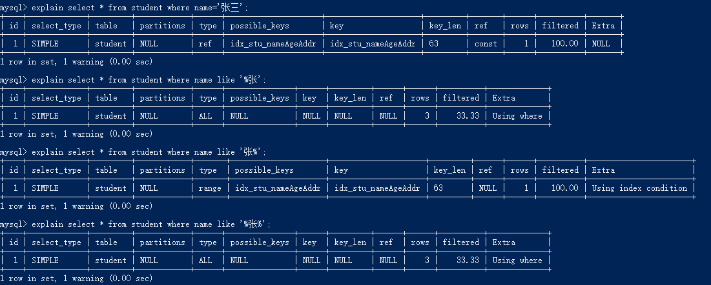
但是，这种情况like前面使用通配符，也是会走索引的：（select查询的字段刚好是复合索引的字段，所以为什么在查询的时候不建议使用*）
explain select name,age,address from student where name like '%张%';
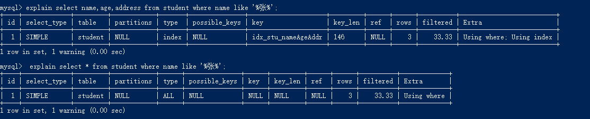
少用or，用它来连接时会索引失效。
explain select * from student where name='张三' or age=15;
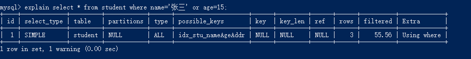
关于in关键字
in关键字在mysql中是个很神奇的存在
-- 主键
explain select * from student where id in (1,2);
explain select * from student where id in (1,2,3,4,5,6,7,8,9);
-- 复合索引
explain select * from student where name in ('李四');
explain select * from student where name in ('李四', '王五');
我们可以看到，in使用关键字少的时候，会走索引的，但是内容较多，就会造成索引失效
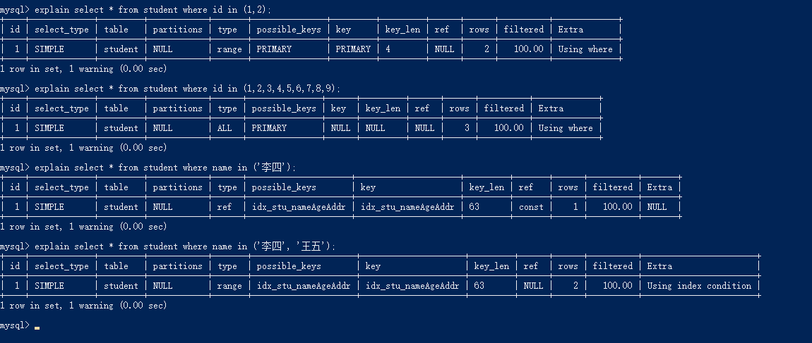
四、总结
最后在网上看到一个顺口溜，如下：
全值匹配我最爱，最左前缀要遵守；
带头大哥不能死，中间兄弟不能断；
索引列上少计算，范围之后全失效；
LIKE百分写最右，覆盖索引不写星；
不等空值还有or，索引失效要少用。